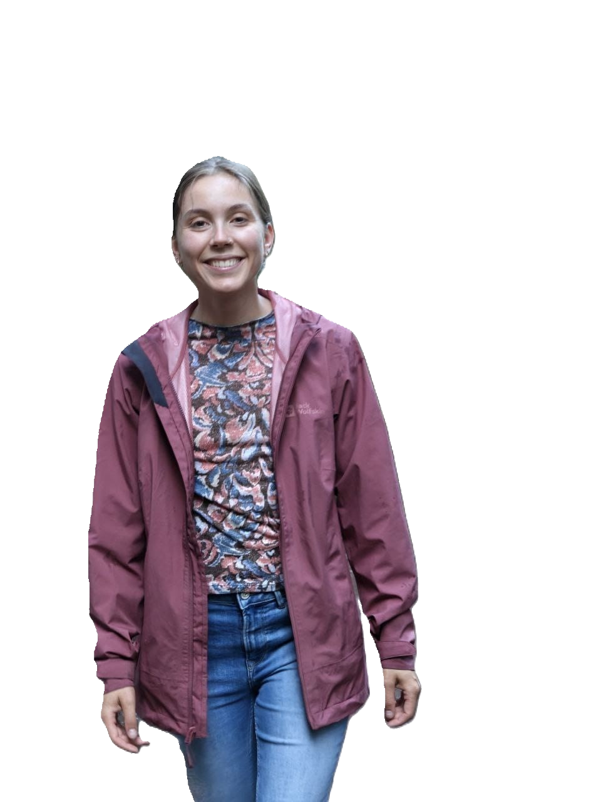
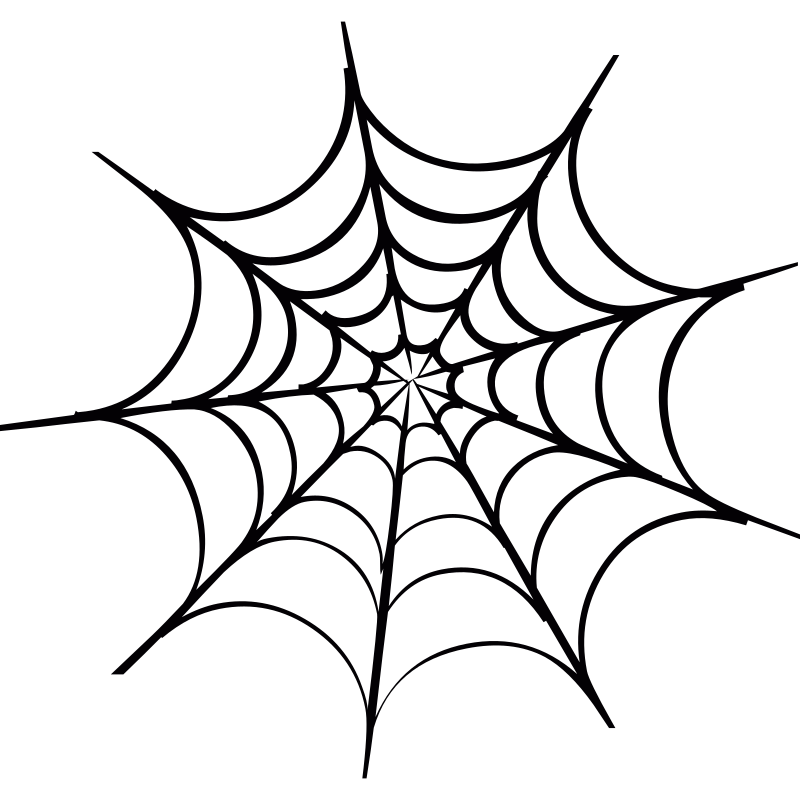

Hi, ik ben Cait van Steenis, een data scientist, gepassioneerd door ruimtelijke
data voor het ontwerpen van steden en het ondersteunen van ons ecosysteem. Met een bachelor
in Ruimtelijke Ordening en een master in Geo-Information Science,
kan ik een brug vormen tussen mens en dier en de omgeving waarin ze leven.
Ik ben een nuchter persoon en pak problemen aan met humor en creativiteit.
Data is alleen nuttig wanneer het begrepen wordt. Cartografie en de digitalisering van kaarten zijn essentieel voor het begrijpen van complexe gegevens en het toegankelijk maken ervan.

Alles en iedereen is met elkaar verbonden. Het begrijpen van deze connecties is essentieel voor het oplossen van problemen en het zien van kansen.
We creëren voor de toekomst die onzeker is. We moeten ons kunnen aanpassen aan veranderingen voor een stabiele leefomgeving.